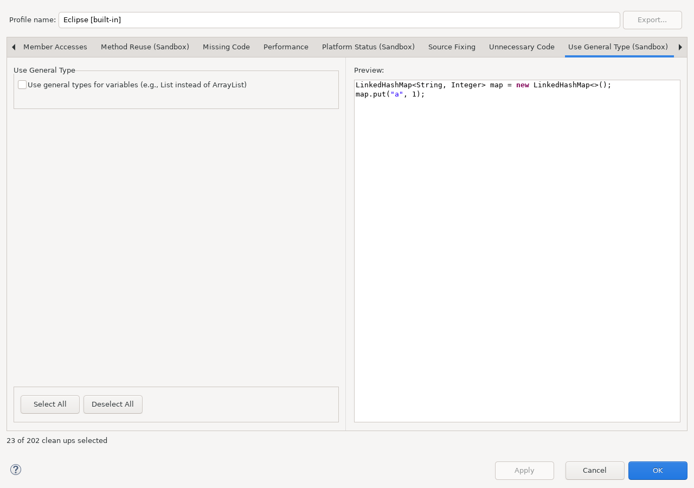

Replaces overly specific declared types with a compatible, more general API type where supported.
This documentation is installed by sandbox_use_general_type_feature
together with the runtime plug-in. The runtime plug-in does not depend on this Help bundle.
Open Java > Code Style > Clean Up, edit a cleanup profile, and select Use General Type (Sandbox).

Continue with Using this feature and Reference, safety, and limitations.